中正大學美食大廳
從校內學餐到大吃市、小吃街，再到宵夜熱點，中正大學周邊美食選擇豐富多元。
這裡整理了 17 間店家的深度介紹，無論是剛入學的新生還是老生，都能快速找到適合的餐廳。
校內美食
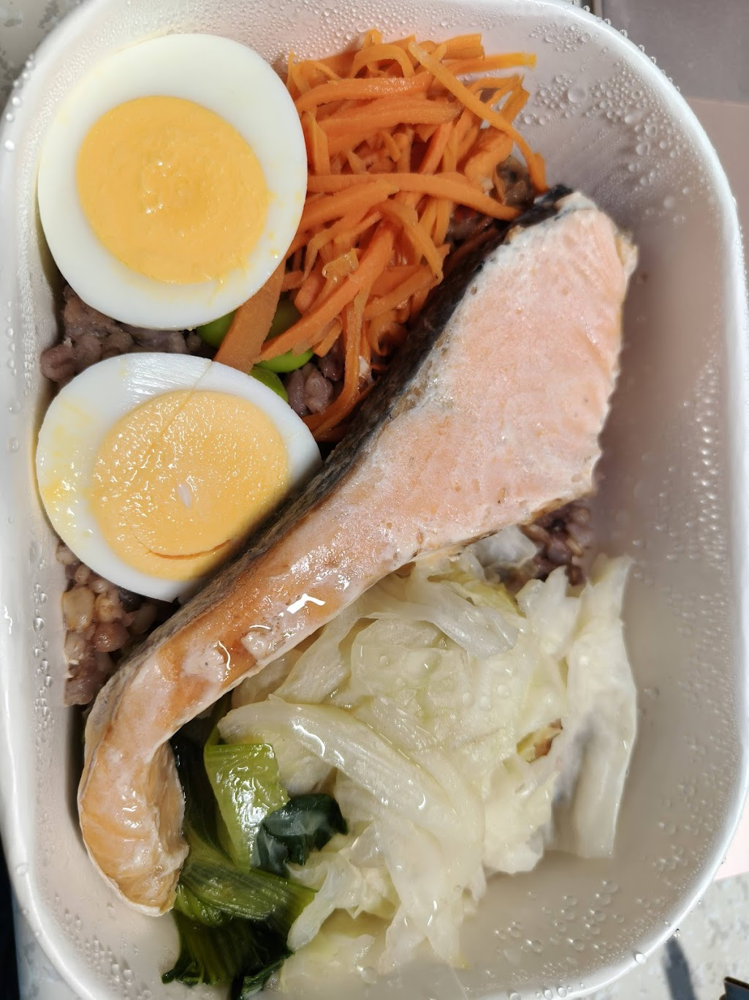
活動中心路易莎
位於中正大學活動中心，無時間限制，落地窗俯瞰寧靜湖。提供健康餐盒與精品咖啡，每日至 19:00。
閱讀全文
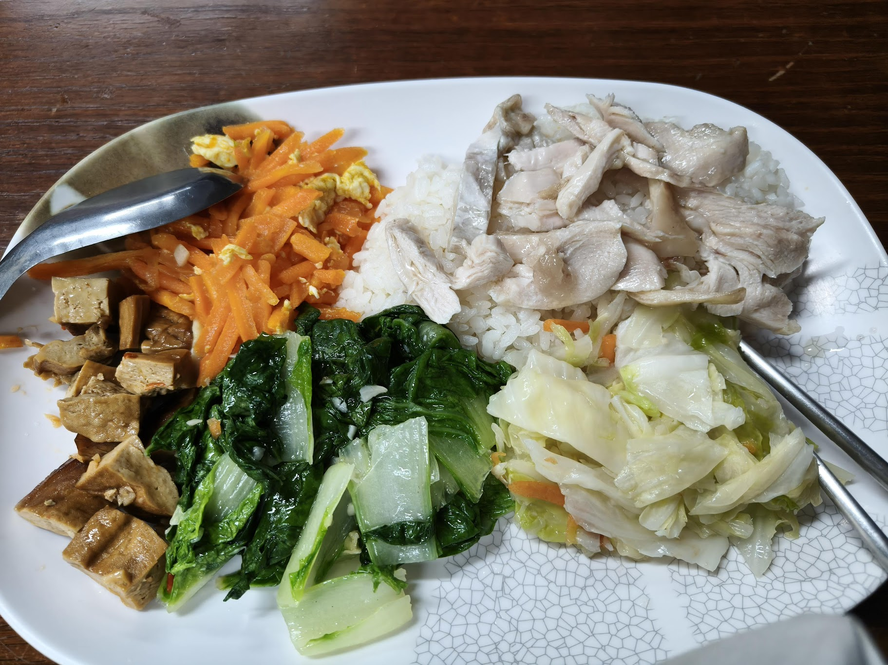
佳豐美食生活坊
中正大學活動中心人氣學餐，多樣主菜含四樣配菜，蜜汁雞腿套餐含蒸蛋約 100 元，份量充足實惠。
閱讀全文
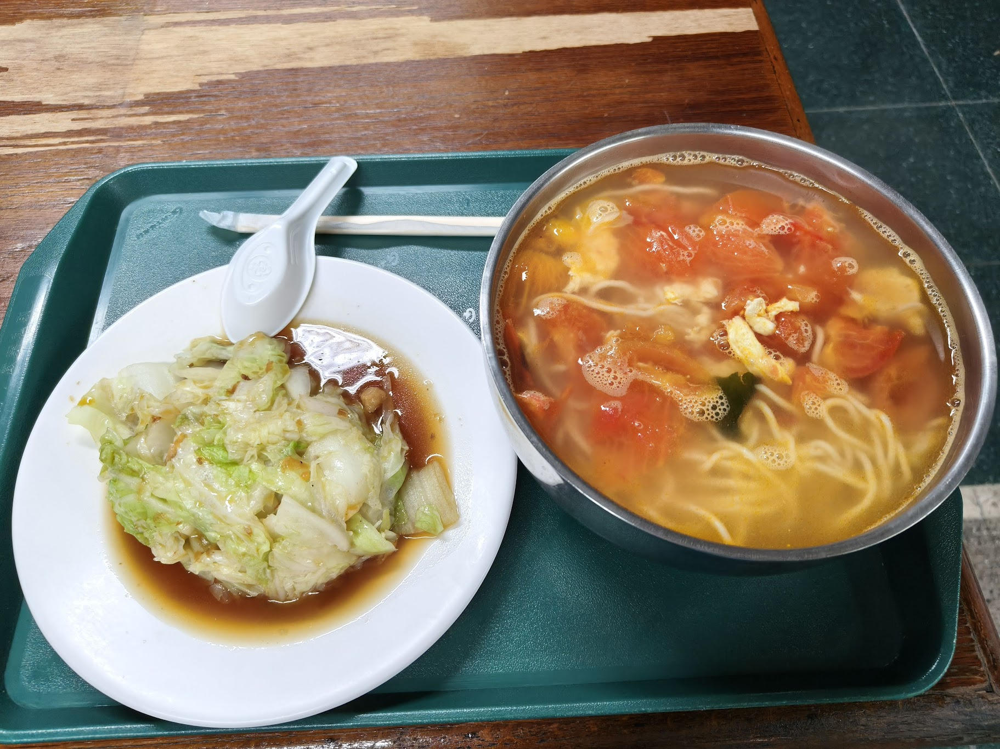
婆媳好味道
中正大學活動中心學餐，古早家常口味，招牌雞腿飯與豬腳飯各約 90 元，份量扎實、口味道地。
閱讀全文
大吃市推薦

Chill bowl
校門口對面大吃市的健康輕食丼飯，多種特調醬汁可選，可加點 5 種蔬菜，89–169 元，健身族首選。
閱讀全文
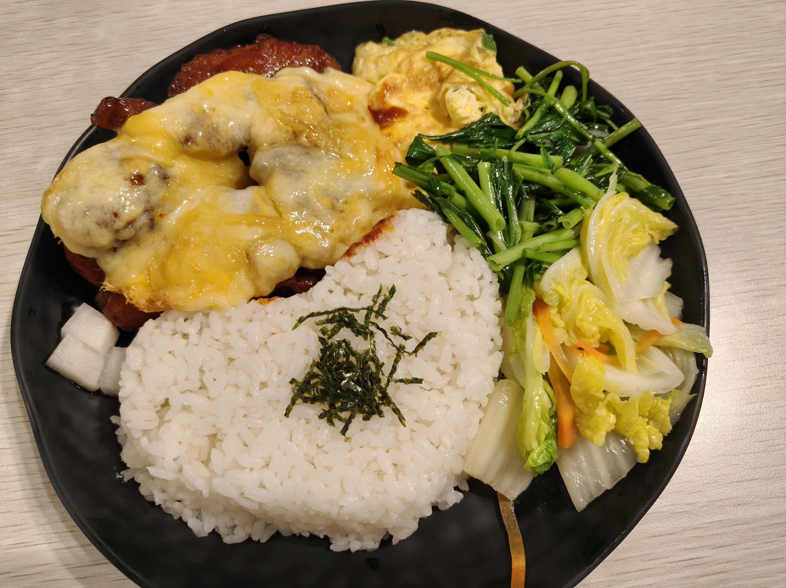
i嘎嗶複合式餐廳
道地韓式炸雞飯 160–195 元，每日 10:00–20:30，鋼琴背景音樂，有素食選擇，適合聚餐或早午餐。
閱讀全文

Simple fit
大門附近高蛋白健康便當，每日輪換主菜（牛排、鮭魚、雞胸），支援 Line 點餐，約 170–180 元。
閱讀全文

Smile Joyce微微笑手作坊
大吃市人氣手工甜點店，以手工蛋糕與特色派聞名，是考後解壓、課後犒賞的最佳去處。
閱讀全文
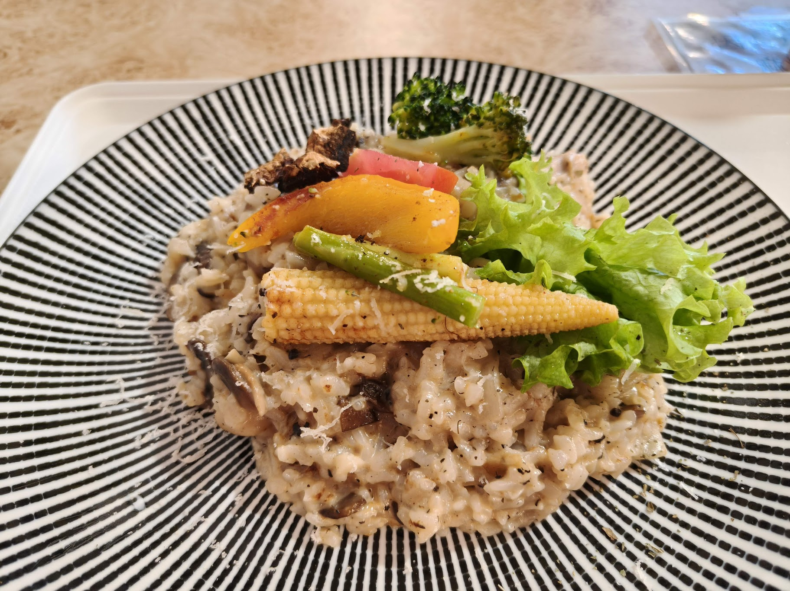
Vpasta 義式料理
大吃街義式料理，黑松露牛肝菌雞肉燉飯白醬濃郁，義大利麵多樣，180–388 元高 CP 值享受。
閱讀全文
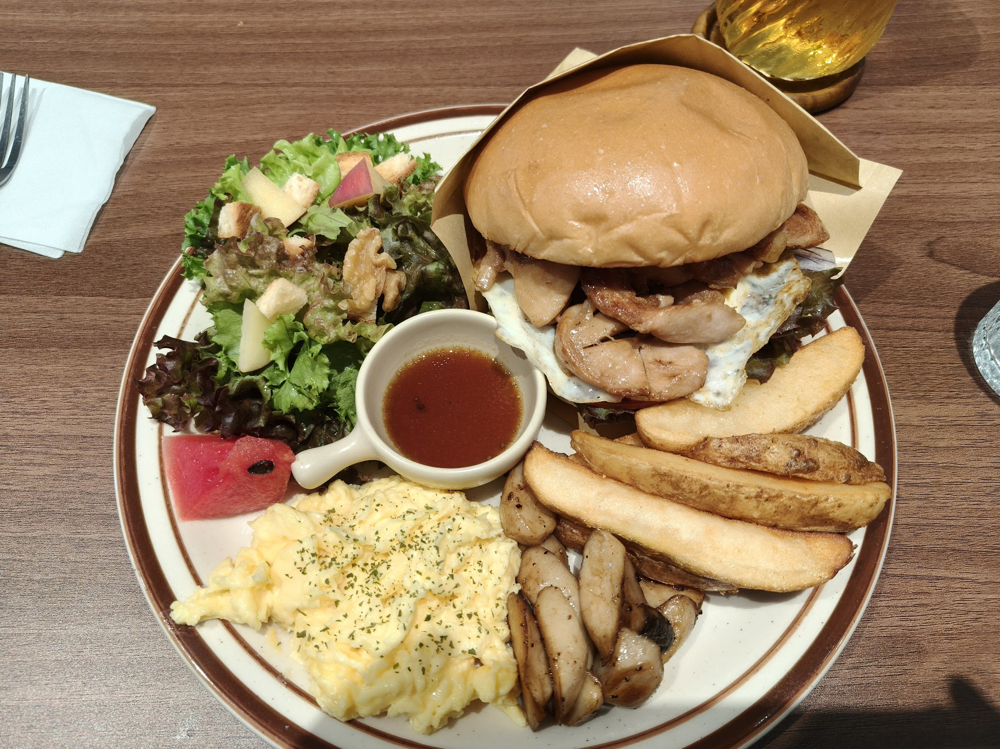
早參早午餐
大吃市超人氣早午餐店，環境明亮舒適，招牌雞腿漢堡肉汁豐富，高級綠茶製作精良，份量十足。
閱讀全文
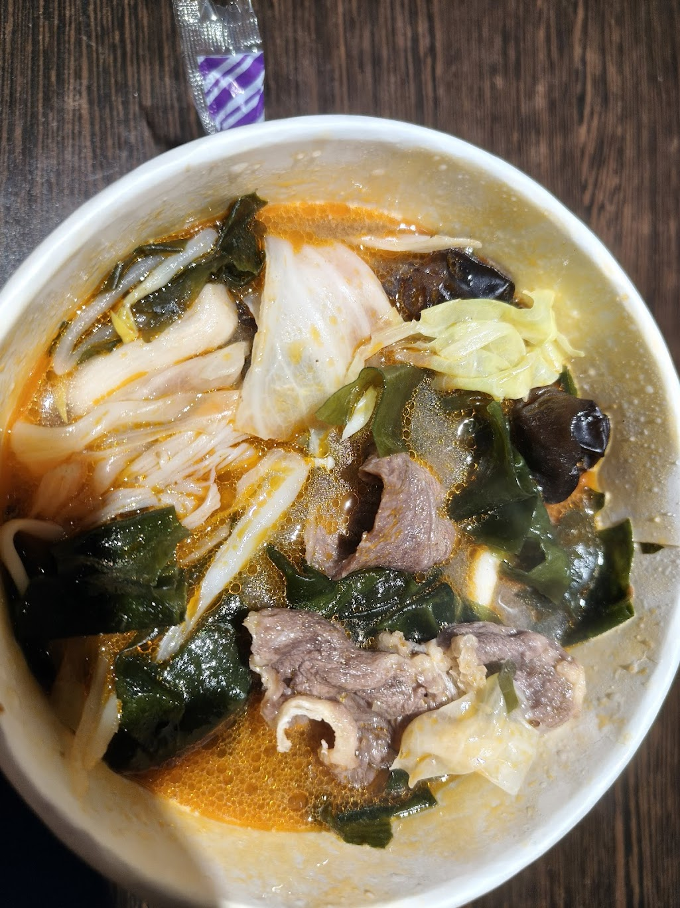
洵香麻辣燙
大吃街麻辣燙，辣度可自選（可不辣），藥草湯底清爽不燥熱，蔬菜組合加牛腩與寬冬粉約 120 元。
閱讀全文
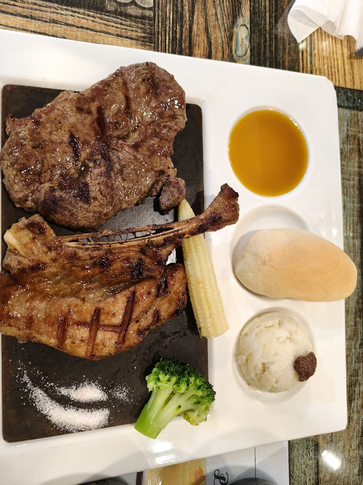
瘋beef
大吃街牛排豬排套餐，320–390 元附無限白飯、咖哩、義大利麵等小菜，學生聚餐超值首選。
閱讀全文
小吃街必吃

The golden spoon
小吃街道地巴基斯坦與印度料理，雞肉咖哩香料層次豐富，特色捲餅外皮酥脆，是校園周邊獨特異國美食首選。
閱讀全文
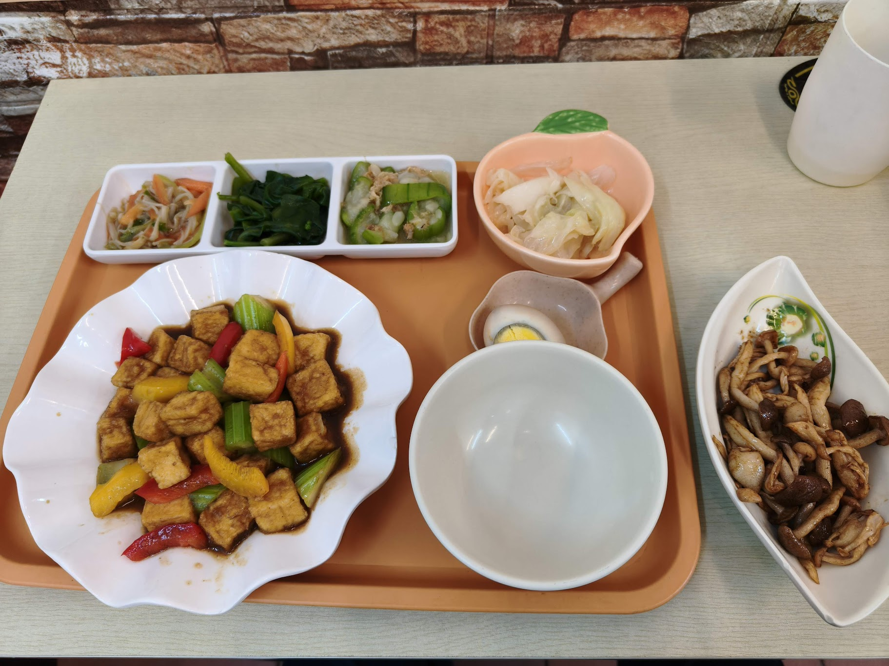
意素家蔬食創意料理
小吃街精緻素食創意料理，什錦菇菇鍋與九層塔煎蛋大受好評，簡餐 75–120 元，素食者首選。
閱讀全文
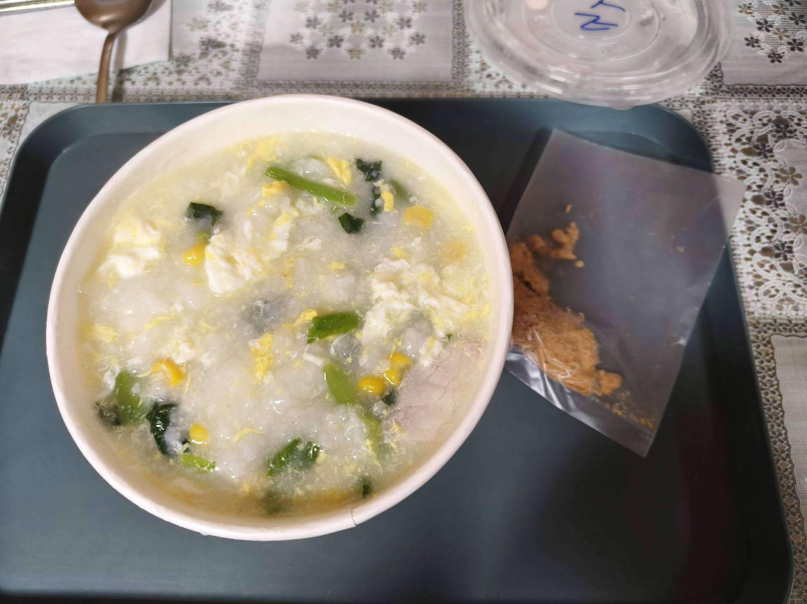
農閒時刻的粥
小吃街韓式泡菜火鍋麵，配料可自選石斑魚、虱目魚、豬牛肉或蛤蠣，份量豐富營養均衡。
閱讀全文
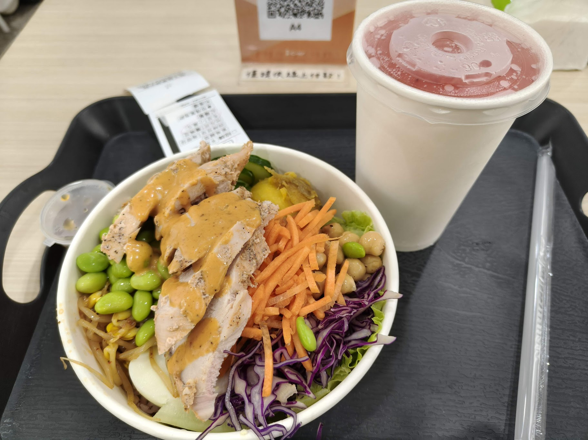
蔬芙
小吃街高 CP 值蔬食飯盒，鷹嘴豆、豆腐、牛腩、雞胸等配料豐富，雙主菜加蔬菜約 200 元。
閱讀全文
人氣宵夜
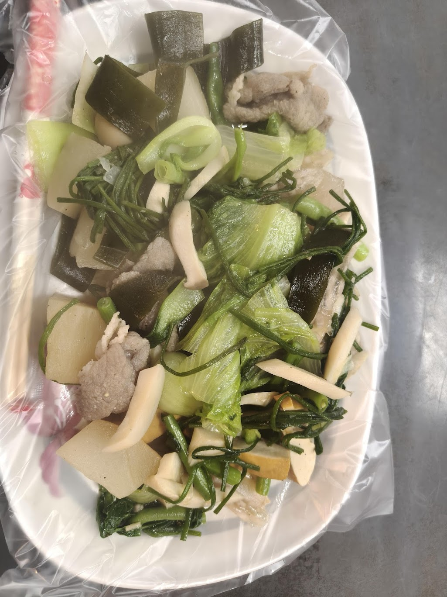
豪記滷味
中正大學學生宵夜首選，每日 17:00–23:30，蔬菜種類豐富（空心菜、芥藍菜等），滷味道地新鮮爽脆。
閱讀全文
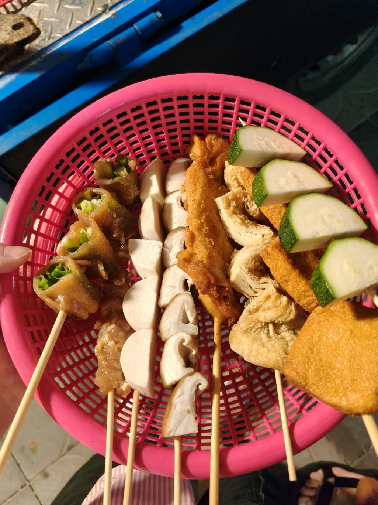
馳名串燒
學生宵夜人氣烤串攤，自選串料搭配招牌靈魂醬汁，雞腿串、培根磨菇與豆干層次豐富，騎車可達。
閱讀全文